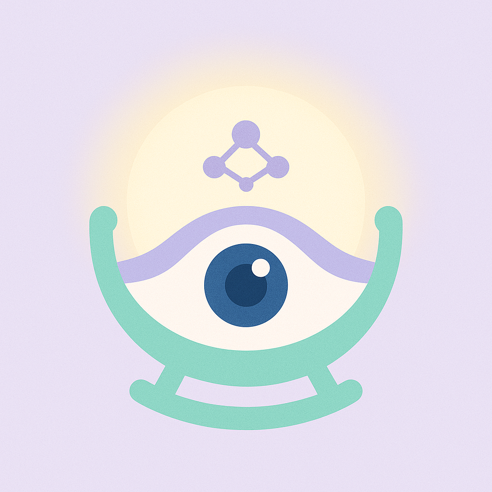
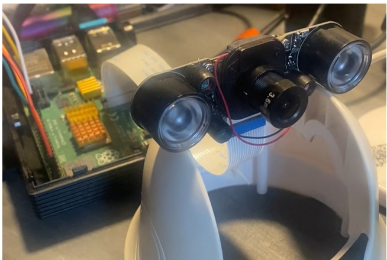
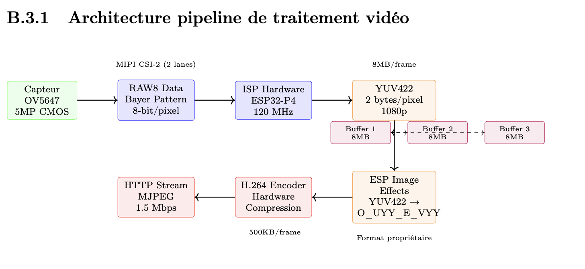
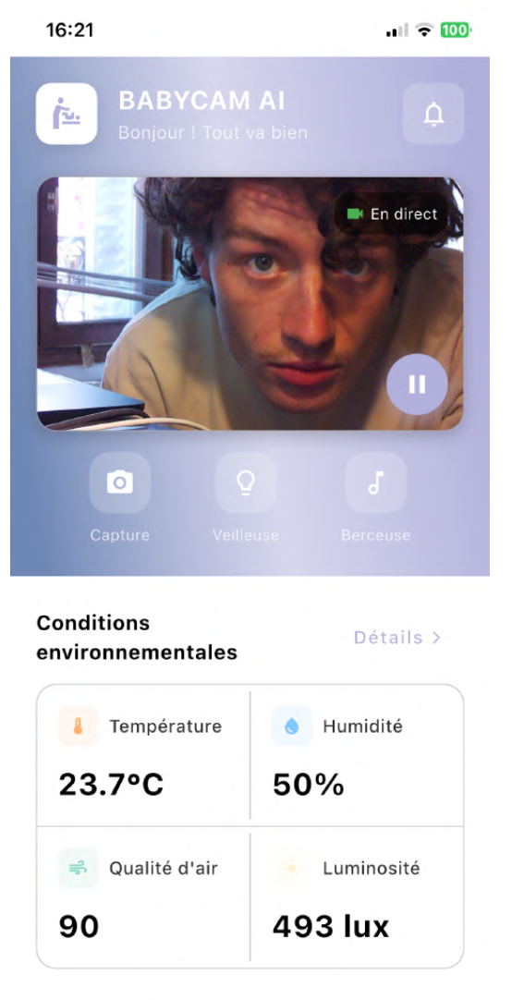

Intelligent baby monitor with embedded AI. 1080p@30FPS, H.264 hardware compression, AI cry detection, environmental sensors — and a Flutter app to tie it all together.

Most baby monitors on the market stream compressed, delayed video with no intelligence — no cry detection, no environmental awareness, no real-time alerts. Parents are left staring at a blurry feed hoping something doesn't go wrong.
BABYCAM is a ground-up embedded system that combines an ESP32-P4 dual-core RISC-V with a 5MP camera, MEMS microphone, and four environmental sensors. Built during a 6-month internship at Medivietech (Paris) — the prototype was validated with an industrializable architecture ready for production.
The ESP32-P4 is Espressif's latest high-performance chip — dual RISC-V cores at 400MHz with 64MB PSRAM, a major leap over the standard 520KB. This headroom is what makes real-time H.264 compression and AI inference possible without offloading to a separate processor.

The video pipeline runs entirely in hardware: the ESP32-P4's built-in ISP converts raw sensor output to YUV422, which is then H.264-compressed at the hardware level before streaming. This brings frame size from ~2.5MB (raw 1080p) down to ~500KB without touching a CPU cycle for compression.

The companion app is built in Flutter — a single codebase targeting iOS and Android. It receives the H.264 stream, renders it in real time, surfaces AI alerts, displays environmental data, and lets parents remotely control the nightlight and play lullabies.

Built over 6 months at Medivietech (Paris) — from hardware selection and PCB evaluation, through firmware development and mobile app, to a validated prototype. The architecture was validated as industrializable, with a strategic pivot from DVP to MIPI CSI-2 interface during development to unlock full resolution and hardware ISP performance.